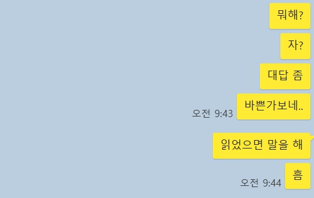

“밥도 아닌데 왜 뜸을 들이니. 말을 거는데 대답이 없는데 왜…(중략) 내 톡 왜 씹어(씹어 씹어). 읽은 거 다 아는데 씹어(씹어 씹어). 답장도 못 할 만큼 바뻐(바뻐 바뻐). 핸드폰 달고 살잖아. 이제는 안 읽고 씹어(씹어 씹어). 안읽씹이 훨씬 더 나뻐(나뻐 나뻐 진짜 나뻐)” -장민호 디지털 싱글 <읽씹 안읽씹> 中 메시지를 보낸 지 한참 지났지만 답장이 없다. 읽으면 읽은 대로, 안 읽으면 안 읽은 대로, 그저 묵묵부답이니 기다리는 사람만 속이 탄다. 오죽하면 저런 노래가 다 나왔을까. ‘왜 대답이 없냐’ 물으면 그들도 할 말은 많다. 뭐라고 해야 할지 몰라서, 불편해서, 싫어서, 귀찮아서, 무서워서…. 그래서 답장하지 않는 걸로 답장을 대신한다.

연인·친구·직장 동료 간에도 빈번한 ‘읽씹’, ‘안읽씹’
‘읽씹(읽고 씹다)’과 ‘안읽씹(안 읽고 씹다)’은 각각 메시지를 읽고 답장하지 않는 것과 읽지 않고 답장도 안 하는 것을 뜻한다. 둘 다 메신저에 상대방의 메시지 확인 여부를 실시간으로 알 수 있는 기능이 생기면서 만들어진 말들이다.
모든 상황에 읽씹과 안읽씹이 적용되는 건 아니다. 보통 읽씹과 안읽씹은 무언가 묻거나 요구하는 등 대답이 필요한 메시지를 보냈을 때 대답이 없는 걸 뜻한다. 상호 합의 또는 암묵적 합의하에 대화가 종료돼 더 이상 메시지를 보내지 않는 걸 ‘읽씹했다’고 말하진 않는다. 메신저를 쓰다보면 한 번쯤 읽씹이나 안읽씹을 경험하기 마련이다. 가족, 연인, 친구는 물론, 대학교 조별 과제 대화방, 회사 대화방 등에서도 빈번하다. 어제 읽씹·안읽씹을 당한 사람이 내일은 읽씹·안읽씹을 하는 사람이 되기도 한다. 그만큼 메신저상의 수많은 관계에서 답장을 받지 못하는 상황이 발생한다. 미리보기로 어느 정도 내용을 알 수 있는 데다, 얼굴을 보지 않으면 상대가 누구든 즉답해야 한다는 압박감에서 벗어날 수 있기 때문이다. 단국대 심리학과 임명호 교수는 “메신저로 대화하면 표정이 안 보이고 바로 대답할 필요도 없다”며 “누군가에겐 분명하게 거절 의사를 드러내지 않아도 되는 게 장점으로 느껴질 수 있다”고 말했다.